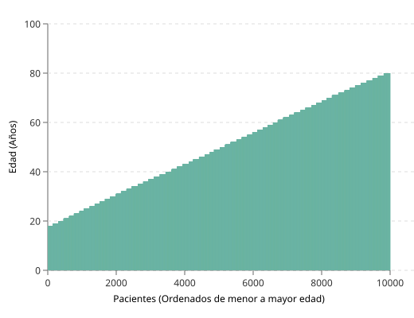
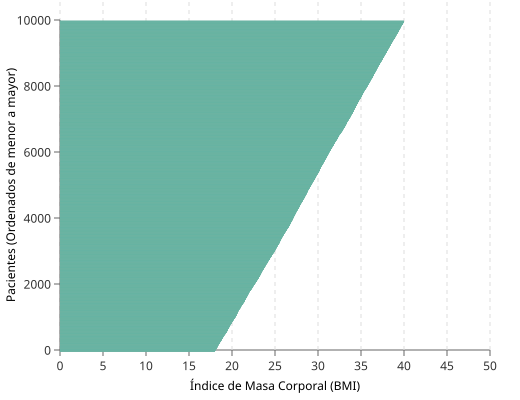
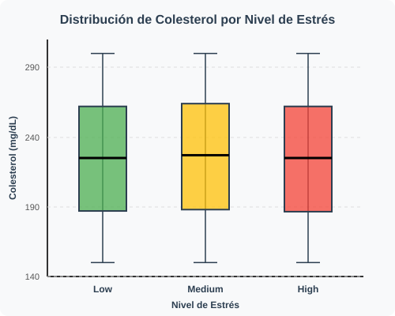
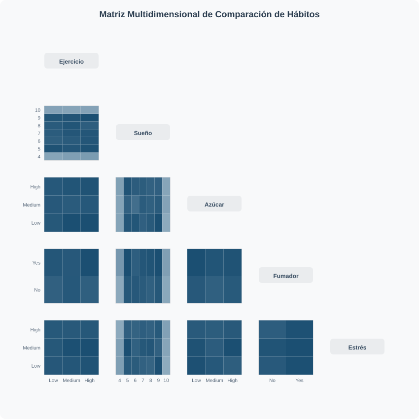

Este informe tiene como objetivo principal realizar un análisis exploratorio de los datos sobre un conjunto de datos sobre personas con enfermedades del corazón, con sus características de forma anónima para poder generar visualizaciones informativas sobre la relación que tienen las variables entre sí, para poder comprender los datos de una mejor manera, buscando patrones, identificando anomalías, etc.
Los problemas de corazón son cada vez más comunes en las sociedades modernas, esto debido a muchos factores que afectan la salud física de las personas, como la falta de actividad física, el consumo de comidas que perjudican el estado del corazón y el resto del cuerpo, el consumo de drogas, padecimientos previos como presión alta, diabetes, tiempos de sueño irregulares, altos niveles de estrés. Estas y otras razones son fuentes de problemas en el corazón en personas de todo el mundo. Es por esto por lo que muchos especialistas en el tema recolectan datos de las personas que pueden ayudar a confirmar si se tiene o no algún padecimiento del corazón, o al menos se pueda utilizar como guía para poder identificarlos temprano, como el conjunto de datos que se utilizara en el presente análisis exploratorio de los datos.
El conjunto de datos que es usado para este análisis fue realizado por Oktay Ördekci llamado Heart Disease, el cual contiene 21 indicadores de riesgo relacionados a los problemas de salud. Como la edad, genero, presión en sangre, etc. Estos datos fueron recolectados para analizar las posibilidades de riesgo en padecimientos del control y ayudar a la investigación en temas de salud. La siguiente tabla muestra todos los indicadores que contiene el conjunto de datos, una breve descripción de cada uno y los valores que puede tomar.
| Indicador | Descripción | Valores |
|---|---|---|
| Age | La edad de cada individuo | Numérico entero |
| Gender | El género del individuo | Male o Female |
| Blood Pressure | La presión en sangre del individuo | Numérico entero |
| Cholesterol Level | El nivel de colesterol de cada individuo | Numérico entero |
| Exercise Habits | Nivel de ejercicio del individuo | Low(bajo), Medium(medio), High(alto) |
| Smoking | Si el individuo fuma o no | Yes o No |
| Family Heart Disease | Si alguien en la familia tiene padecimientos en el corazón | Yes o No |
| Diabetes | Si la persona padece de diabetes o no | Yes o No |
| BMI | Índice de masa corporal del individuo | Numérico decimal |
| High Blood Pressure | Si el individuo tiene presión de sangre alta | Yes o No |
| Low HDL Cholesterol | Si el individuo tiene bajo nivel de colesterol HDL | Yes o No |
| High LDL Cholesterol | Si el individuo tiene alto nivel de colesterol LDL | Yes o No |
| Alcohol Consumption | Cuánto alcohol consume el individuo | None(nada), Low(poco), Medium(medio), High(alto) |
| Stress Level | Nivel de estrés del individuo | Low(bajo), Medium(medio), High(alto) |
| Sleep Hours | Cantidad de horas de sueño del individuo | Numérico decimal |
| Sugar Consumption | Consumo de azúcar del individuo | Low(bajo), Medium(medio), High(alto) |
| Triglyceride Level | Nivel de triglicéridos del individuo | Numérico entero |
| Fasting Blood Sugar | Nivel de azúcar en sangre del individuo | Numérico entero |
| CRP Level | Nivel de la proteína C reactiva | Numérico decimal |
| Homocysteine Level | Nivel de homocisteína del individuo | Numérico decimal |
| Heart Disease Status | Si el individuo tiene o no problemas del corazón | Yes o No |

Análisis: Al visualizar a los pacientes ordenados de menor a mayor edad, la suave pendiente ascendente de las barras demuestra que el dataset abarca una muestra poblacional sumamente uniforme. La distribución cubre desde adultos jóvenes (aproximadamente 20 años) hasta personas de la tercera edad (cerca de los 90 años), sin presentar saltos abruptos o vacíos demográficos, lo que garantiza que los análisis posteriores no estén sesgados hacia un único grupo etario.

Análisis: La curva de distribución horizontal revela un patrón clínico muy claro respecto al peso de los pacientes. La inmensa mayoría de la población estudiada se concentra firmemente en el rango de un Índice de Masa Corporal (BMI) de 25 a 35. Esto indica que una proporción significativa de los individuos en este estudio clínico entra en las categorías de sobrepeso u obesidad, variables que la literatura médica asocia fuertemente con un mayor riesgo de desarrollar complicaciones cardiovasculares.
Análisis: El gráfico de líneas ilustra la progresión ordenada de los niveles de colesterol en toda la muestra. Se evidencia que, si bien la curva inicia en rangos manejables (cerca de 120), experimenta un ascenso constante donde una gran cantidad de individuos supera el umbral considerado saludable (200). La gráfica destaca visualmente la preocupante "cola larga" de pacientes que alcanzan picos críticos de colesterol cercanos a 400, representando el sector de más alto riesgo en el estudio.
Análisis: El diagrama de dispersión expone una alta densidad poblacional concentrada entre los 40 y 80 años de edad. Al mapear la presencia de enfermedad cardíaca (puntos rojos) frente a pacientes sanos (puntos verdes), se observa que los casos positivos están fuertemente entrelazados en todos los niveles de presión sanguínea. Sin embargo, resalta una acumulación visual de diagnósticos positivos a medida que avanza la edad y la presión arterial supera el umbral de 120-140, sugiriendo que la combinación de envejecimiento e hipertensión es un factor de riesgo predominante.

Análisis: El diagrama de muestra la relación entre los niveles de colesterol y el estrés en la población estudiada, demostrando una correlación donde se observa un patron interesante, los datos se distribuyen de forma uniforme en casi todos los niveles, esto podria indicar que en el dataset, en el conjunto de datos no se encuentra una relacion clara entre el nivel de estres y la concentracion de colesterol.

Análisis: La matriz de dispersion muestra los habitos personales como las horas de sueño redondeadas, el consumo de azucar, el nivel de estres, si es fumador y la cantidad de ejercicio que se realiza comparando cada variable con las demas, donde cada subgráfica representa la comparación de dos variables, la intesidad del color azul muestra la densidad demografica de personas que cumplen con ambas condiciones.
El estudio realizado junto con las visualizaciones en este dataset ha permitido que se transformen los datos crudos en datos clabe sobre los factores de riesgo que afectan las enfermedades cardaíacas.
Enlaces a los repositorios de código e imágenes.